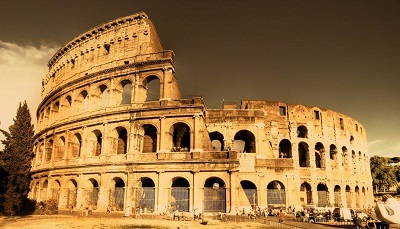

Roma
Día 1: Ruta por la ciudad.
El primer día realizamos una ruta por la ciudad al llegar a medio día parando cerca del barrio más comercial a comer un menú del día
Día 2: Visita al Coliseo y al Foro Romano
Visitamos el Coliseo, lugar de diversión y entretenimiento para los romanos, donde se practicaban desde peleas de gladiadores hasta carreras de cuadrigas, y luego el Foro Romano que se encuentra justo enfrente y era la verdadera ciudad romana donde ocurrian todos los actos sociales y comerciales.